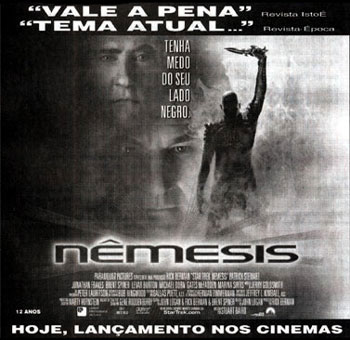
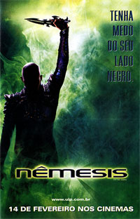

|
A Reação dos
Críticos
Por
Fernando
Penteriche
Pode-se esperar boas
críticas dos meios de comunicação para um filme cuja franquia a
que pertence foi desprezada pelo estúdio proprietário da marca
através de um desvínculo que começa nos créditos de abertura e
se estende para cartazes, displays e todo o tipo de propaganda?
Será que a Paramount, de posse do valor medíocre que Nêmesis
alcançou nas bilheterias norte-americanas (aproximadamente US$ 43
milhões até agora), achou que tirando Jornada nas Estrelas do
título iria chamar mais público? Essa estratégia obtusa é só
mais um exemplo de como anda terrível a situação de uma das
maiores franquias do entretenimento, por mais que os alguns
trekkers ainda não queiram enxergar.
A UIP, distribuidora do filme no Brasil, não quis apostar em um
produto que já teve dias melhores. Lançou poucas cópias em
salas da Grande São Paulo, Rio de Janeiro, Recife, Brasília,
Salvador e Vila Velha (!) no Espírito Santo. Os outros Estados
receberão suas cópias de Nêmesis assim que elas saírem
de cartaz nas praças citadas acima. Imaginem a qualidade dessas cópias
quando chegarem após o Carnaval em Belo Horizonte ou em abril em
Porto Alegre...
No domingo anterior ao lançamento de Nêmesis em nosso país,
as principais revistas semanais do Brasil, Veja, Época e
Isto É, já traziam, como de costume, suas opiniões sobre
o décimo filme de Jornada nas Estrelas para o cinema. Veja
e Época foram mais duras. A revista da Editora Abril disse
que "só quem é fã de carteirinha da série pode achar
atrativos nesta chocha ficção científica", chamou o
roteiro de "anêmico" e os efeitos especiais de
"medíocres", cotando o filme como "fraco". A Época
dedicou um espaço maior do que a Veja, mas malhou o filme
da mesma maneira. "Há tempos não se via uma aventura tão
tagarela e tão pouco movimentada", disse o crítico Cléber
Eduardo em seu texto, que ainda apontou uma incoerência no
roteiro, dizendo que "Nêmesis prega mensagem
pacifista, mas pratica a intervenção bélica". A Isto É
foi mais leve, e o crítico Apoenan Rodrigues resumiu o filme como
"uma história em que maldades, coragem e amizade formam o
cinturão intergaláctico de uma diversão totalmente sem
compromisso".
Quem abriu algum jornal do eixo Rio-São Paulo na sexta-feira, 14
de fevereiro, dia da estréia do filme, se deparou com o seguinte
anúncio abaixo.

Repare que na parte de
cima do anúncio há duas frases retiradas das críticas das
revistas Isto É e Época. A frase que diz
"Vale a Pena" eu realmente não consegui encontrar na Isto
É, mas a "Tema Atual..." vem desta frase da Época:
"a guerra é justificada como única forma de acabar com as
opressões. Tema atual, ainda mais agora, às vésperas de um
conflito". É interessante como os responsáveis pela
publicidade do filme têm de usar uma lupa para achar um mínimo
elogio em algum texto, e às vezes eles são publicados totalmente fora do contexto original na tentativa de promover o produto. Esse
"tema atual", para um despercebido, pode ser qualquer
coisa. Clonagem, aventura espacial, sacrifícios pessoais, ou,
"guerras justificadas para acabarem com a opressão".
Gostaria de saber o real significado do "vale a pena"...
 Falando
em publicidade, é interessante notar que a UIP mudou a frase que
está no pôster do filme. No original era "começa a jornada
final de uma geração" e em português ficou "tenha
medo de seu lado negro". Picard em nenhum momento teve medo
de seu "lado negro", ou seja, Shinzon. Aliás, ninguém
que viu o filme deve ter levado esse clone inverossímil a sério
nem por um segundo, quanto mais ter "medo".
Usando a expressão "lado negro" a primeira coisa que
vem a minha cabeça é o "lado negro da Força" de Star
Wars. É nítido que a UIP quis pegar alguns Jedis incautos nessa.
A estratégia é um primor. Primeiro tiram o nome "Jornada
nas Estrelas" do pôster para, provavelmente, não atrair
trekkers? Depois colocam essa frase para atrair Jedis? E quem vai
ver um filme apenas baseado em um cartaz verde com um careca
esquisito erguendo uma faca? Se houvesse a identificação de que
se tratava de mais um Jornada, não seria mais
interessante? O pessoal de marketing da UIP fez faculdade mesmo?
De qualquer maneira, como nem o título "Star Trek"
consta na abertura do filme, é fácil imaginar que a própria
Paramount resolveu vendê-lo apenas como "Nêmesis"
para o resto do mundo, já que nas cópias que foram exibidas
nos cinemas dos Estados Unidos, o nome da franquia está presente.
Sexta-feira, abro os jornais, sendo que alguns acessos pela
internet, e não tenho surpresa alguma. A Folha de S.Paulo
trouxe, em seu Guia da Folha, uma resenha escrita por Sérgio
Rizzo que até elogia alguns aspectos do filme, e a cotação do
Guia para Nêmesis é de duas estrelas, ou seja, regular. O
caderno Ilustrada do mesmo jornal traz um texto muito consciente
de autoria de Pedro Butcher que, embora escorregue no tradicional
Dr. Spock, traduz bem o atual estado da série, dizendo que
"ela não está encontrando caminhos de renovação capazes
de realimentar seu interesse". O outro grande jornal
paulista, O Estado de S.Paulo, não trouxe texto algum
sobre o filme.
No Rio de Janeiro, O Globo, em texto de Arnaldo Bloch,
questiona a falta de ousadia filosófica que, segundo o autor,
"sempre diferenciou Jornada nas Estrelas do universo
bombom de Star Wars. Por outro lado sobram batalhas, o que o
aproxima das cansativas obsessões da saga de George Lucas".
Boa observação. Outro trecho digno de nota é "por melhor
que seja um longa de Jornada, nunca vai superar um bom episódio".
O Jornal do Brasil apresenta um texto de Ulisses Mattos que
não diz muita coisa nova, apenas que Nêmesis é um filme
morno que deve agradar quem não é fã da série. O jornal O
Dia, também carioca, mostra um tom otimista. Tatiana
Contreiras gostou do número musical de Data, dos efeitos
especiais e chamou o enredo de simples, mas modernoso. Só a
"bizarra aparição" de Whoopi Goldberg foi criticada
pela jornalista, pois a famosa atriz aparece em uma cena e faz
apenas uma piada sem graça.
Saindo dos jornais e indo para a internet, no site e-Pipoca
encontramos a opinião de Rubens Ewald Filho, talvez o mais
conhecido crítico de cinema do país e um
"simpatizante" dos trekkers. Rubens já foi visto em
convenções realizadas em São Paulo e acompanha bem de perto a série.
Para ele, Nêmesis é um filme médio e Stuart Baird, o
diretor, demonstrou não ter controle nas seqüências dramáticas,
porém nada que atrapalhasse o bom andamento da trama. O filme não
aborreceu ou irritou o crítico, que porém não escondeu em seu
texto que está percebendo que o ciclo de Jornada nas Estrelas no
cinema já passou. Uma passagem interessante para ilustrar como críticas
são subjetivas é que, enquanto Rubens Ewald Filho acha que Tom
Hardy é um ator fraco e que nem se parece muito com Patrick
Stewart, além de não ter carisma, uma crítica da Agência
Reuters publicada pela Folha Online dizia que "o
novato Hardy demonstra carisma no papel de vilão
convencional".
As críticas relacionadas acima podem tirar a vontade de alguém
em ver o filme? Claro que sim, mas tudo é muito subjetivo. O negócio
é você assistir a Nêmesis e tirar suas próprias conclusões
pois, quando se trata de Jornada nas Estrelas, a variação
dos pontos de vista pode ser grande. E não é mais legal assim?
Confira alguns links para matérias que falam sobre o filme.
Folha
de São Paulo
O
Globo
O
Dia
Jornal
do Brasil
The
New York Times
Agência
Reuters
Veja
Isto
É
Época
Revista
SET
E-Pipoca
(Rubens Ewald Filho)
|